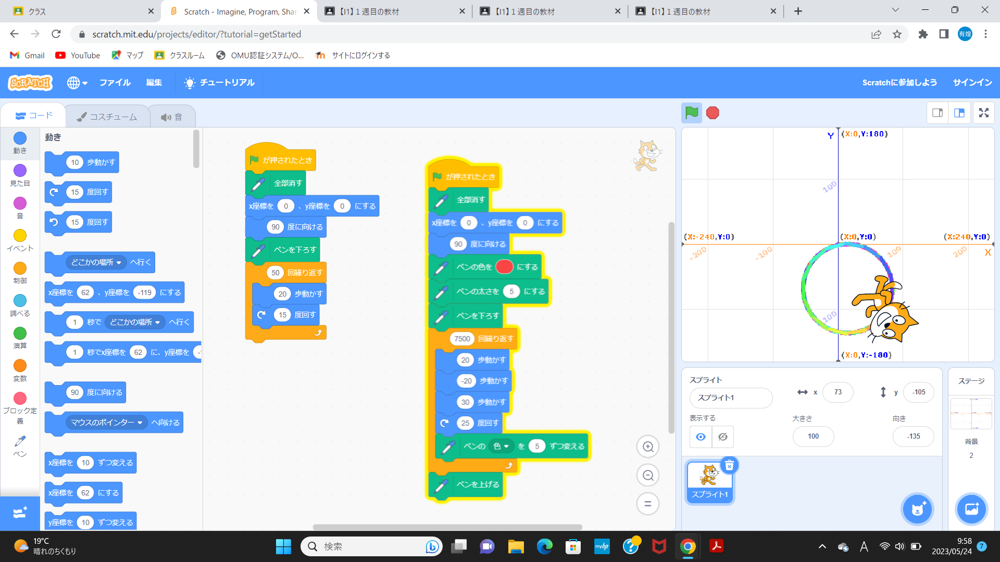
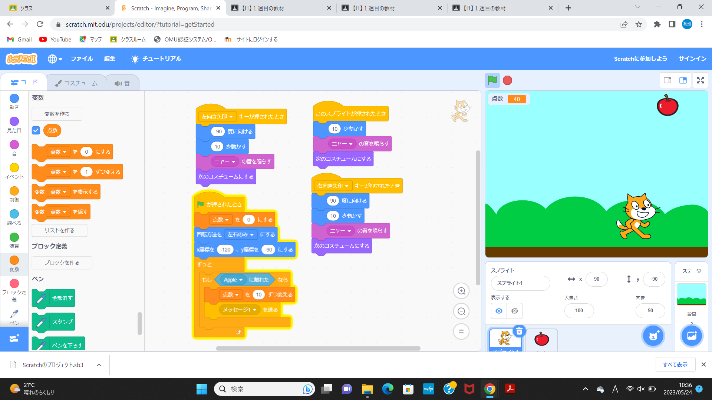

1週目のレポート ： 公大高専１年実習I-1
2班4番 稲葉有煌
第1週目
1-1 サイエンスアート

1.内容
スクラッチを使って線を書くプログラムを線の色の種類や大きさを変化させつつ、作成した。
2.感想
色や速さ、形を数値で指定できることに驚愕し、数値がそれぞれどのような役割を担っているのか興味を持った。
1-2 ゲーム

1.内容
スクラッチを使って、落ちてくるリンゴを、猫が拾うとポイントが加算されるゲームを作成した。
2.感想
簡易的なゲームを作成して、普段自分が行っているゲームにも、このようなプログラムで判定等が設計されていることがわかり、それらがこれらと違ってどこまで細かくなっているのかに関心を持った。
1-3 ホームページ作成
私のホームページ
1.内容
決まった定型例を基に、自己紹介文を作成する。
2.感想
それぞれの文字の前や後につくカッコ内の文字が示す役割の種類や詳細な内容に興味を持った。